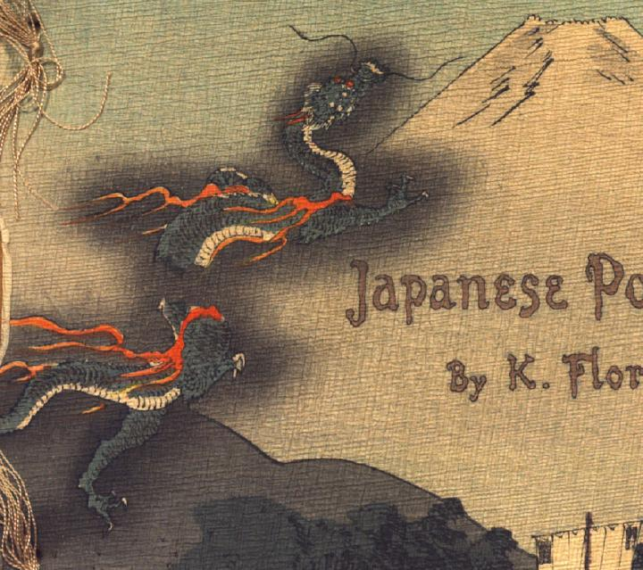

空を昇っていく竜。全身は緑色の鱗に覆われ、腹部は白く蛇腹になっている。口元に長いひげが生え、目玉は赤い。脚に3本鋭く長い爪が生えている。脚の付け根辺りから赤い炎のようなものがたなびいており、全身に黒い影をまとっている。背景に富士山のような山が描かれている。
著作者：A.Lloyd／出典：親書誌：U426_nichibunken_0105：Poetical greetings from the Far East／日付：2006／資源識別子：U426_nichibunken_0105_0001_0000
Copyright (c)2010- International Research Center for Japanese Studies, Kyoto, Japan. All rights reserved.